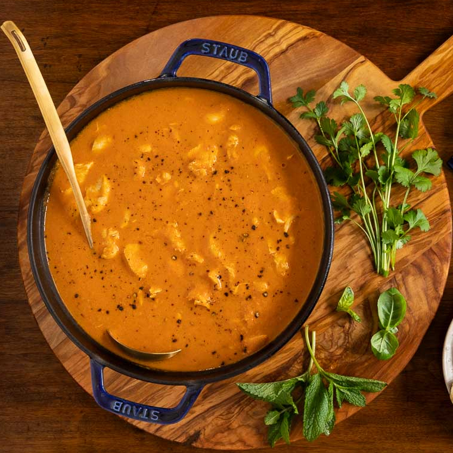

Groundnut Soup

Ingredients
- 2 medium yellow onions (about 12 ounces; 340g)
- 2 cups (480ml) homemade low-sodium chicken broth
- 5 medium cloves garlic, divided
- 1 ounce (28g) fresh ginger (about a 1-inch knob)
- 2 teaspoons tomato paste
- 4 bone-in, skin-on chicken legs
- bay leaves
- 1 cup creamy peanut butter (9 ounces; 255g)
- 1 (28-ounce; 794g) can plum tomatoes
- 1 whole smoke-dried fish
- Kosher salt and freshly ground black pepper
- Hot cooked white rice or fufu, to serve (see notes)
Steps
-
In a blender, purée 2 onion halves, 1/2 cup (120ml) chicken stock, 3 garlic cloves, 1/2 ounce ginger, and tomato paste.
-
Toss to coat.
-
Transfer chunks of onion, ginger, garlic cloves, and hot pepper to blender.
-
Add peanut butter, canned tomatoes and their juices, and remaining 1 1/2 cups (360ml) chicken
stock and purée until smooth.
-
Pass blended mix through a fine-mesh strainer into the Dutch oven, stirring to incorporate.
-
Increase heat to medium and bring to a simmer.
- Lower heat to medium-low and cook.
-
Stir occasionally, until chicken is tender, oils have surfaced,
and mixture has thickened and reduced by about one-third.
-
Add smoked fish, reduce heat to low, cover pot, and cook an additional 5 minutes.
A Delicious Bowl of Green Chicken and Beef Okro Soup
Okro Soup, is a very popular and delicious stew that is loved by the majority of the people, in West Africa, especially if cooked well.
Okra soup is a fascinating dish because of its many permutations across West Africa and its reinvention in the Americas as gumbo.